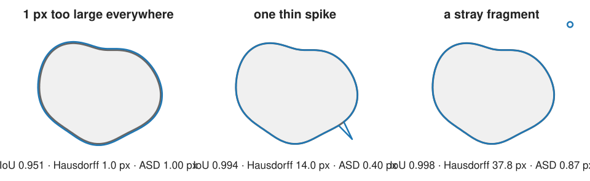
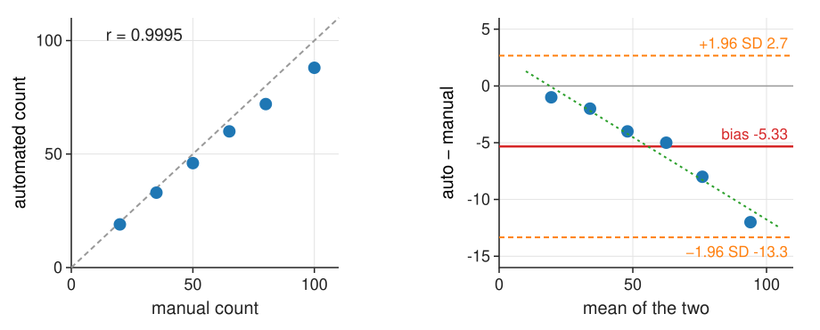

Last unit matched objects and counted them. Often what matters is not the match but the outline or the numbers we measure. And the “truth” we compare with is drawn by people.
Boundary metrics: Hausdorff distance and average surface distance, and what each is sensitive to.
Counts and measurements against manual values: why correlation is not agreement, and the Bland–Altman plot: bias and limits of agreement.
Ground truth is uncertain: the agreement between two annotators is the ceiling of any score.
How many annotated images an evaluation needs.
Slides titled The math give the formulas and proofs; the ideas are complete without them.
When the outline matters
A tumour margin, the shape of a cell, the thickness of a membrane: here a good match is not enough.
For every point on the predicted outline, find the distance to the nearest point of the true outline, and the same the other way round. Then summarise all these distances:
Hausdorff distance: the largest of them (both directions). “Every point is within H pixels of the other outline.”
Average surface distance (ASD): the mean. “The typical outline error is ASD pixels.”
HD95: the 95th percentile, a compromise that ignores the worst 5 %.
In pixels, or in µm if the pixel size is known.
Three kinds of outline error

Uniform one-pixel offset: every distance is 1 px. Hausdorff = ASD = 1; IoU 0.95.
One thin spike, 14 px long: IoU hardly notices (0.994), Hausdorff jumps to 14; ASD stays small (0.40).
A tiny fragment far away: IoU 0.998, Hausdorff 38; HD95 0 (the fragment is less than 5 % of the outline).
IoU and Dice count pixels, the boundary metrics measure distances: choose by what matters.
The math: Hausdorff and surface distances
Boundaries \partial A, \partial B (finite sets of boundary points), d(a, \partial B) = \min_{b \in \partial B}\|a - b\|.
h(A, B) = \max_{a \in \partial A} d(a, \partial B), \qquad H(A, B) = \max\big(h(A, B),\, h(B, A)\big)
The directed distance h is not symmetric: a fragment of B far from A raises h(B, A) but not h(A, B).
Fast computation with the distance transform (the morphology day): the distance transform of “not \partial B” gives d(x, \partial B) at every pixel x in one pass, O(N) for N pixels; read it on \partial A.
Try it: boundary distances
Counts and measurements
Often the outlines are only a means: the result is a number per image (cells per field, mean nuclear area, intensity per cell).
Then evaluate the numbers directly: for a set of images, measure the same quantity automatically and manually, and compare the two lists.
The first idea is a scatter plot of automated against manual, with the correlation r. It answers the wrong question.
Correlation is not agreement
A method that always reports 80 % of the manual count has correlation r = 1 and is wrong by 20 %.
Correlation measures whether the points lie on some straight line, not whether they lie on the identity line.
A wider range of values gives a higher r for the same errors: counts from 10 to 150 cells make almost any method look good.
We want to know how far apart the two measurements are, and whether that depends on the size of the value.
The Bland–Altman plot
For each image: the difference (auto − manual) against the mean of the two.

Manual 20, 35, 50, 65, 80, 100; auto 19, 33, 46, 60, 72, 88. r = 0.9995, yet:
bias = mean difference = −5.33 (a systematic undercount);
limits of agreement = bias ± 1.96 SD = −13.3 to +2.7: the range of the error for a new image;
the cloud slopes down: the undercount grows with the count (proportional bias, e.g. more merges in dense images). Then the limits mislead; compare ratios (or work on a log scale): auto/manual drops from 0.95 to 0.88.
The math: Bland–Altman
Pairs (x_i, y_i), i = 1, \dots, n (reference, method). Differences d_i = y_i - x_i, means m_i = (x_i + y_i)/2.
(95 % of differences inside, if they are roughly normal). Proportional bias: fit d_i = \alpha + \beta m_i; \beta \ne 0 means the error depends on the size.
Why correlation ignores bias: for y = a x + b with a > 0, r(x, y) = 1 for every a and b. And if y = a x + b exactly, then d = (a - 1)x + b and m = \frac{a + 1}{2}x + \frac b2, so the points lie on a line with slope \frac{2(a - 1)}{a + 1}: zero only for a = 1.
Bias and scatter have different cures
Bias (systematic): can be calibrated away if it is stable (multiply by 1/0.8, subtract the offset), measured on a calibration set.
Scatter (random): cannot be calibrated; only a better method, or averaging over more objects, reduces it.
For comparing two conditions measured the same way, a constant bias often cancels. But not if it depends on the condition: if treated wells are denser and merge more, the undercount is larger there and fakes (or hides) an effect.
Measurements: small objects, large relative error
Areas of objects, automated vs manual: a one-pixel outline offset is a fixed absolute error at the boundary, so a large relative error for small objects.
A disc of radius r drawn 1 px too large: area ratio (r + 1)^2 / r^2: 1.78 for r = 3, 1.21 for r = 10, 1.14 for r = 15.
In a Bland–Altman plot of areas the differences grow with the size, while the ratio plot shows the relative bias growing for small objects.
The same effect makes perimeters and small areas biased in the measurements day; the point spread function adds to it (the image formation day).
Try it: agreement of counts
Ground truth is uncertain
Annotators disagree: on boundaries (a few pixels, where exactly is the edge of a blurred nucleus?) and on objects (is this dim blob a nucleus? is this dividing cell one or two?).
The agreement between two annotators (their F1 against \tau, their Bland–Altman plot) is the ceiling of any score against one of them.
A method with F1 0.90 against annotator A, where annotator B scores 0.88 against A, is “as good as a human”, not “better than 0.88”.
Remedies: several annotators and a consensus; an “ignore” label for ambiguous objects; synthetic data where the truth is known by construction (but then the domain differs from real images).
How many annotated images?
A score from few objects wobbles. A recall of 0.9 measured on n independent objects has a standard error
\text{SE} = \sqrt{0.9 \cdot 0.1 / n}: \quad 0.055 \text{ for } n = 30, \quad 0.017 \text{ for } n = 300.
Roughly 95 % of the time the true recall lies within ±2 SE of the measured one.
But objects in one image are not independent: same illumination, same density, same staining. 300 objects from 2 images are closer to “2 measurements” than to 300. Evaluate per image, look at the spread across images, and collect images from several experiments. Units 3 and 4 make this precise.
The math: standard error of a proportion
A recall is a proportion: \hat p = X/n with X the number of found objects among n. If the objects are independent with the same p, X \sim \text{Binomial}(n, p), \text{Var}(\hat p) = p(1 - p)/n:
For a 95 % interval of half-width w: n \ge 1.96^2\, p(1-p)/w^2; in the worst case p = \frac12 and w = 0.05: n = 385.
With m objects per image and correlation \rho between objects of the same image, the variance grows by the design effect1 + (m - 1)\rho: the effective number of objects is n / (1 + (m-1)\rho) (derived in the replicates unit).
Summary
Hausdorff = the worst boundary distance (sensitive to one spike or a stray fragment); ASD = the typical one; HD95 in between. IoU and Dice hardly see thin errors.
Evaluate counts and measurements directly. Correlation is not agreement.
Bland–Altman: difference against mean; bias (calibratable), limits of agreement (scatter), slope = proportional bias (then use ratios).
A one-pixel outline error is a large relative error for small objects.
Inter-annotator agreement is the ceiling; use several annotators, consensus, “ignore” labels.
A score from n objects has SE \approx \sqrt{p(1-p)/n}, and objects within an image are not independent: count images and experiments.